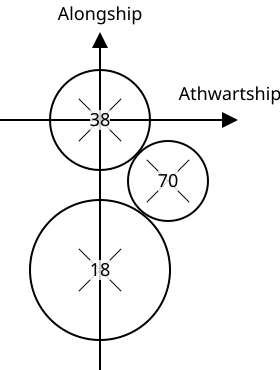

The horizontal positioning of transducers relative to the 38 kHz transducer.
Used by the Horizontal offset correction module.
The picture below shows a transducer configuration seen from above, and the coordinate system used. The positive z (depth) axis is inwards in the figure. Here the 18 kHz transducer has a negative alongship coordinate compared to the 38 kHz transducer, so a negative number should be inserted into the alongship coordinate below for 18 kHz (if 38 kHz is selected as origin). The transducer selected as origin should have zero offsets. The 70 kHz has a positive athwartship coordinate and a negative alongship coordinate compared to 38 kHz, so a positive number should be inserted into to athwartship coordinate for 70 kHz, and a negative number for alongship coordinate.

The transducer offsets are given with respect to one of the transducers, usually the 38 kHz transducer.